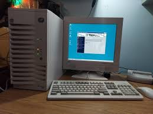
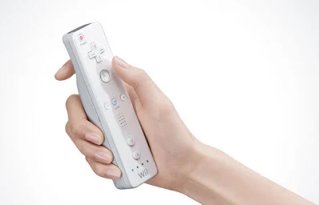

Là où les deux décennies précédentes étaient mouvementées, les années 2000 représentent une période relativement calme mais cruciale pour la consolidation de l'industrie du jeu vidéo.
Le marché des consoles, qui était très divisé entre multiples compétiteurs, se voit réduit à trois acteurs principaux : Sony, Microsoft et Nintendo. Cette concentration du marché crée un écosystème plus stable pour les développeurs et éditeurs de jeux.
PlayStation 2 & 3
Xbox & Xbox 360
GameCube & Wii
Du côté des ordinateurs, ceux-ci deviennent de plus en plus répandus, et le partage des jeux en ligne se démocratise, surtout avec l'aide de la plateforme spécialisée Steam. Cette plateforme permet d'acheter des licences pour pouvoir jouer à des jeux, en les installant directement en ligne, sans passer par un média physique comme les CD.

Un ordinateur de cette ère - Symbole de la démocratisation du PC gaming
Les MMO (Massively Multiplayer Online games) deviennent aussi beaucoup plus répandus, les MMO les plus connus ayant été sortis à cette époque. Ces jeux créent des mondes virtuels persistants où des millions de joueurs peuvent interagir simultanément.
Tout de même, la Wii, sortie par Nintendo au milieu des années 2000, a amené une grande nouveauté : les manettes équipées de capteurs de mouvements. Bien que ses compétiteurs ont tenté de les copier avec la Kinect (Microsoft) et la PlayStation Move (Sony), la Wii resta un franc succès de la marque, ayant été vendue à plus de 100 millions d'exemplaires.

La Wiimote - La manette révolutionnaire de la Nintendo Wii
Bien qu'au niveau matériel, il n'y avait que les trois acteurs principaux cités plus tôt et les ordinateurs, du côté développement de jeux, beaucoup de développeurs "indés", ou indépendants, commençaient à vendre leurs jeux sur Steam. Ces petits studios opéraient aux côtés de grands acteurs qui avaient débuté avant l'avènement d'Internet, ou qui s'étaient servis de lui, continuant à vendre des gros jeux avec un budget respectable.
Un nouveau marché naquit aussi durant cette décennie : les jeux mobiles. Celui-ci, avec les années, connut une rentabilité beaucoup plus grande que les autres secteurs. Même si les jeux sont gratuits, les publicités imbriquées et les achats intégrés étaient le gagne-pain de tout développeur qui voudrait se lancer dans le domaine.
Réduction du marché des consoles à trois acteurs majeurs : Sony, Microsoft et Nintendo, créant un écosystème plus stable.
L'avènement de Steam et de la distribution numérique transforme fondamentalement l'achat et la distribution de jeux.
Nintendo introduit le jeu par mouvements avec la Wii, élargissant considérablement le public des joueurs.